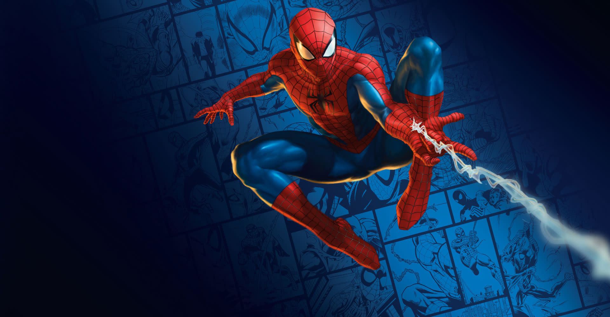
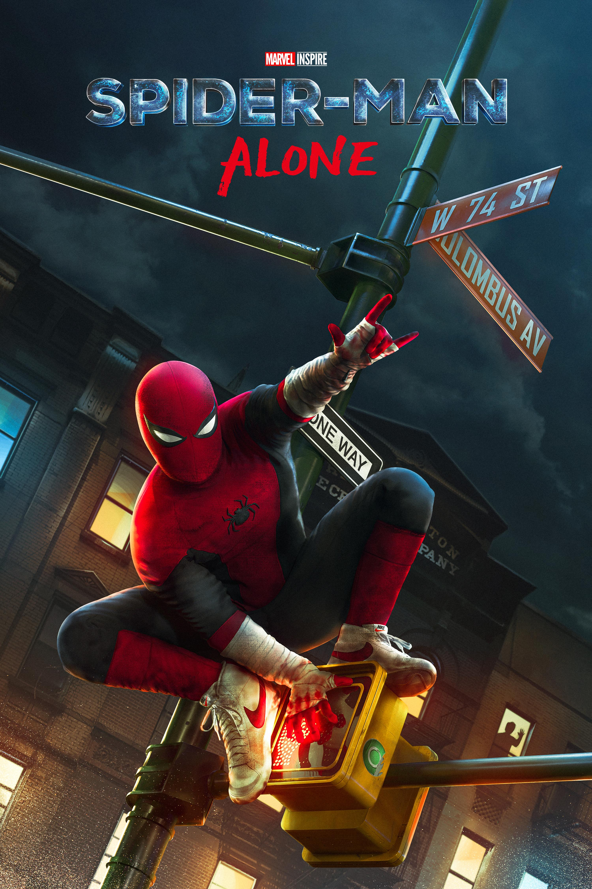

Spider-Man is a fictional superhero created by writer-editor Stan Lee and writer-artist Steve Ditko. He first appeared in the anthology comic book Amazing Fantasy #15 in August 1962, published by Marvel Comics. Marvel Comics Created by writer-editor Stan Lee and writer-artist Steve Ditko, Spider-Man first appeared in the anthology comic book Amazing Fantasy #15 > in August 1962, published by Marvel Comics. Spider-Man Silver Age of Comic books. He has been featured in comic books for decades.
The character's name is derived from the fact that he has spider-like abilities, such as clinging to walls and shooting webs from devices on his wrists. Spider-Man's secret identity is Peter Parker, a high school student who lives in New York City. He was raised by his Aunt May and Uncle Ben after his parents died in a plane crash. Peter gained his powers after being bitten by a radioactive spider during a science demonstration. He uses his powers to fight crime and protect the citizens of New York City, while also dealing with the challenges of being a teenager. as a teenager. The character has been adapted into various media, including television shows, films, and video games, and has become one of the most popular and enduring superheroes in popular culture. as a teenager. The character has been adapted into various media, including television shows, films, and video games, and has become one of the most popular and enduring superheroes in popular culture. las a teenager. The character has been adapted into various media, including television shows, films, and video games, and has become one of the most popular and enduring superheroes in popular culture. s a teenager. The character has been adapted into various media, including television shows, films, and video games, and has become one of the most popular and enduring superheroes in popular culture.
